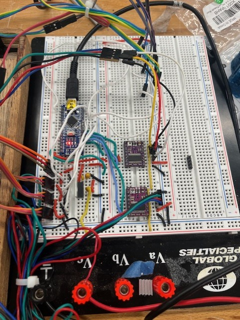

Whack-a-mole
Gizmologists

This portfolio highlights a variety of engineering and design projects spanning mechanical, electrical, and software disciplines. Explore work from interactive games like whack-a-mole and a video game sprite display, to precision engineering such as a brake rotor heat transfer model and a quantitative pronator drift test device, as well as creative mechanisms like the feather pen clock and magic chessboard. Click on any project for detailed documentation and insights into the design process.
Gizmologists

Gizmologists
Gizmologists

Virginia Motorsports, Cockpit and Controls

Advanced Mechatronics

Biomedical engineering design project

Gizmologists
An interactive game built with wood and PLA and programmed into an arduino uno. Designed to test player reaction time and advertise the Gizmologists to students on grounds during outreach events.
Tools/Skills: microcontroller programming, circuits, 3D printing, computer-aided design, woodworking

Used miter saw, jointer, and planer to build frame to hold the buttons.

Designed 3D printed topper to be overlayed on the wooden frame. Includes sockets for inserting buttons and mount for OLED display. This topper was 3D printed in three sections and fitted together on top of a plywood layer.

Used 2n3904 npn transistors to sink sufficient power through the LEDs inbuilt into the buttons and programmed a standard whack-a-mole game into the arduino. A second iteration of this will be build on a perf-board with a darlington transistor array IC and raspberry pi for more complex games.
Gizmologists: A mechanical clock driven by a gantry and servo-mounted feather pen. This clock will writes the time on itself all day in the mechanical engineering building.
When turned on, the arduino nano initiates a calibration sequence that sets minimum and maximum x and y coordinates. The gantry moves until it hits its limit switch in y and each of two limit switches in x. This is used to create planes in which numbers will be drawn.

2 A4988 stepper motor drivers facilitate control of the longitudinal and lateral stepper motors. A LM7805 5V regulator takes in 12V from a power supply and outputs 5V for arduino power and driver logic power. The 12V is used to power the stepper motors' coils. Limit switches are wired with pull-down resistors, and the servo is controlled by a single arduino pin.
During each change of minute, the clock erases one of the LCD boogie boards and writes in a new number.
Tools/Skills: Computer-aided design, servo control, stepper motor drivers, 3D printing, microcontroller programming, object-oriented programming
Gizmologists: Designing a 32x32 LED display to display characters from the Mechatronics class video game project.

Shown sprite is a proof of concept with 16x16 LED array, and the acrylic sheet on top of the LED matrix diffuses the light to make the color appear fuller. Four arrays are being used together to draw the 32x32 pixel sprites, with a frame of laser-cut acrylic and 3D printed material holding the LED arrays together.
Tools/Skills: Arduino, C++, LED matrices, laser-cutting
Virginia Motorsports: Simulated rotor thermal behavior over simulated race lap using conduction, convection, and radiation models. Implemented in Python to compare transient heat transfer effects and maximum temperature experienced by different brake rotor geometries.
This snippet calculates change in temperature with respect to time from heat energy loss due to conduction, convention, and radiation and heat energy added from braking power. Euler's method is applied to solve if this differential equation computationally to create the temperature over time graph shown below.
for i in range(len(brakes_table) - 1):
Qcond = (6 * k * w * t * (brakes_table.loc[i, 'front temperature per rotor'] - Tinf)) / L
Qconv = h * A * (brakes_table.loc[i, 'front temperature per rotor'] - Tinf)
Qrad = fv * fe * sig * A * ((brakes_table.loc[i, 'front temperature per rotor'])**4 - Tinf**4)
Tdot = (brakes_table.loc[i, 'front Q brake per rotor'] - Qcond - Qconv - Qrad) / (Cp * M)
brakes_table.loc[i,'Front Q conduction'] = Qcond
brakes_table.loc[i,'front Q convection'] = Qconv
brakes_table.loc[i,'front Q radiation'] = Qrad
brakes_table.loc[i,'front Tdot'] = Tdot
# Euler's method to assign temperature to next time step
brakes_table.loc[i + 1, 'front temperature per rotor'] = (
brakes_table.loc[i, 'front temperature per rotor'] +
Tdot * (brakes_table["elapsedTime"].iloc[i + 1] - brakes_table["elapsedTime"].iloc[i])
)

Tools/Skills: Python, Pandas, matplot, FEA, thermal modeling
Work-in-progress guitar designed to resemble a celtic harp while merging the concept of an "autoharp". The user will be able to press a button to automatically finger a chord using solenoids that mute the strings not being played.

Back of the guitar includes channeling for wires to pickups and solenoids. This will all be CNC milled out of marine-grade plywood.

Finite element analysis in SOLIDWORKS to determine resonant frequencies of design. Used to make edits to design to achieve resonant frequencies of common notes played on the guitar.

Custom FX pedal to process signal from guitar pickup. Sinusoidal signal goes through a half wave rectifier one one side and sine-to-square wave conversion on the other. Square wave goes through a negative rectifier, then both signals are added in a summing amplifier. Resulting sound is between a sine wave and square wave.
Tools/Skills: Analog circuits, computer-aided design, finite element analysis
Biomedical Engineering Design Project: Designed a device to quantify the pronator drift test. Focused on accuracy and usability in clinical settings.

In this project, I developed working knowledge of inter-integrated circuit communication protocol and implemented it to extract information from two MPU-6050 6-axis accelerometers. This required using a TCA9548A i2c multiplexer to selectively read off of each accelerometer due to them having the same i2c address.
This portion of the code reads data from two MPU-6050 accelerometers through an I2C multiplexer, calculates the angular displacement of each arm, and displays the drift in degrees on an LCD.
sensors_event_t accel, gyro, temp;
tcaselect(0);
mpu1.getEvent(&accel, &gyro, &temp);
downangle1 = atan((accel.acceleration.x) / (accel.acceleration.z));
pronangle1 = atan((accel.acceleration.y) / (accel.acceleration.z));
tcaselect(2);
mpu2.getEvent(&accel, &gyro, &temp);
downangle2 = atan((accel.acceleration.x) / (accel.acceleration.z));
pronangle2 = atan((accel.acceleration.y) / (accel.acceleration.z));
drift = (downangle1 * 57.296 - downangle2 * 57.296);
if (digitalRead(2) == HIGH) {
display = !display;
lcd.clear();
}
if (tick < 11 && tick > 1) { // calculate baseline pronation from first 10s
pronzero1sum = pronzero1sum + pronangle1 * -57.296;
pronzero2sum = pronzero2sum + pronangle2 * 57.296;
Serial.println(pronzero1sum);
Serial.println(pronzero2sum);
}
Tools/Skills: microcontroller programming, i2c peripheral device communication, biomedical device design
Gizmologists: Work-in-progress mechanized chessboard with automated piece movement. The central carriage carrying the electromagnet is driven by a dual-timing belt core XY mechanism and two stepper motors. The electromagnet can turn on to drag chess pieces with embedded magnets from underneath the board. Intended sensing mechanism is a reed switch on each square that would close when a piece is placed on top of it. All pieces can be stored in an array so that an AI opponent can tell where all pieces are at all times and can initiate movements of pieces while interpretting human player's moves.
Tools/Skills: CAD, microcontrollers, motors, electronics